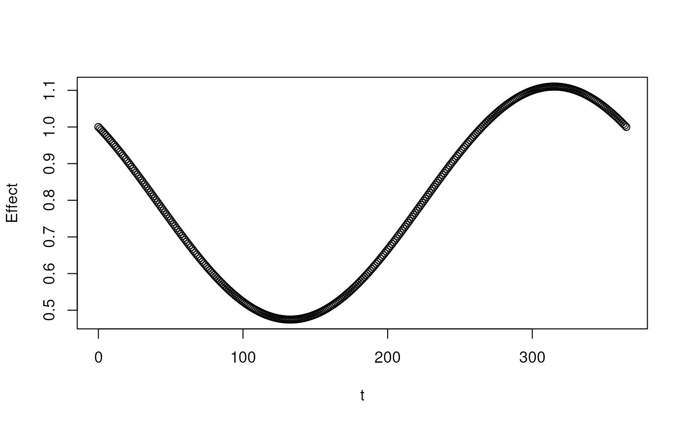
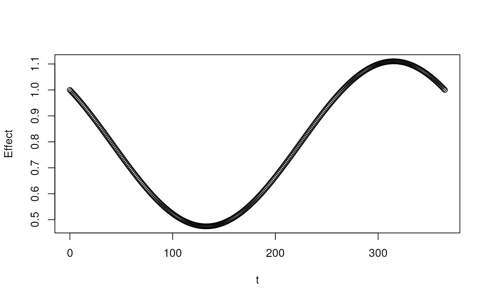

The DiseasySeason module is responsible for implementing various models for the seasonal dependency of the
diseases.
The module implements a number season models with different functional forms.
Models for season are either extracted from the module through get_* functions or the module is configured to
use these models internally through use_* functions whereafter the model can be accessed through $model_t()
and $model_date().
Each season model has varying number of parameters. See documentation for each for details.
See the vignette("diseasy-season") for examples of use.
Super class
diseasy::DiseasyBaseModule -> DiseasySeason
Active bindings
reference_date(
Date)
The reference date of the season models. Read-only.model_t(
function)
The model currently being used in the module (days past reference date). Read-only.model_date(
function)
The model currently being used in the module (date of interest). Read-only.available_season_models(
character)
The list of available season modelsobservables(
diseasy::DiseasyObservables)
The local copy of an DiseasyObservables module. Read-only.
Methods
Method new()
Creates a new instance of the DiseasySeason R6 class.
Usage
DiseasySeason$new(reference_date = NULL, observables = NULL, ...)Arguments
reference_date(
Date)
Date the season modifier is computed relatively to.observables(
R6::R6Class instance)
A instance ofDiseasyObservablesare needed for some season models....parameters sent to
DiseasyBaseModuleR6 constructor.
Method get_cosine_season()
Retrieves the season model with a cosine relationship.
Arguments
peak(
numeric)
Sets the period of maximal activity (days past new-year). By default, risk of infection is antiphase with the DMI climate normal of the maximum daily temperature.scale(
numeric)
Sets the scale of the season model. The scale is the percent wise difference between most active and least active period.
Method use_cosine_season()
Sets the DiseasySeason module to use a cosine model for season.
Arguments
peak(
numeric)
Sets the period of maximal activity (days past new-year). By default, risk of infection is antiphase with the DMI climate normal of the maximum daily temperature.scale(
numeric)
Sets the scale of the season model. The scale is the percent wise difference between most active and least active period.
Method use_covid_season_v1()
Sets the DiseasySeason module to use the first version of the covid 19 season model
Method use_covid_season_v2()
Sets the DiseasySeason module to use the second version of the COVID-19 season model
Examples
# Season module with an constant season
s1 <- DiseasySeason$new()
#> INFO [2023-11-07 09:59:33.961757] DiseasySeason: Module loaded
#> INFO [2023-11-07 09:59:33.963649] DiseasySeason: Using constant_season model
x <- 0:365
plot(x, purrr::map_dbl(x, s1$model_t))
 # Season module with an consine season
s2 <- DiseasySeason$new(reference_date = Sys.Date())
#> INFO [2023-11-07 09:59:34.022389] DiseasySeason: Module loaded
#> INFO [2023-11-07 09:59:34.024771] DiseasySeason: Setting reference_date as 2023-11-07
#> INFO [2023-11-07 09:59:34.026486] DiseasySeason: Using constant_season model
s2$use_cosine_season()
#> INFO [2023-11-07 09:59:34.031181] DiseasySeason: Using cosine_season model
plot(x, purrr::map_dbl(x, s2$model_t))

rm(s1, s2)
# Season module with an consine season
s2 <- DiseasySeason$new(reference_date = Sys.Date())
#> INFO [2023-11-07 09:59:34.022389] DiseasySeason: Module loaded
#> INFO [2023-11-07 09:59:34.024771] DiseasySeason: Setting reference_date as 2023-11-07
#> INFO [2023-11-07 09:59:34.026486] DiseasySeason: Using constant_season model
s2$use_cosine_season()
#> INFO [2023-11-07 09:59:34.031181] DiseasySeason: Using cosine_season model
plot(x, purrr::map_dbl(x, s2$model_t))

rm(s1, s2)